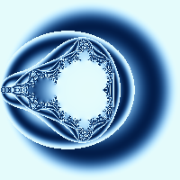
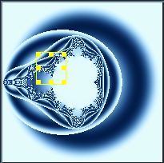

We'll start by generating a simple (but relatively nice looking) image right away.
File => New
fractal
{
mapping
{
(-2, -2, 2, 2) => (200, 200)
}
formula
{
z = [0, 0];
$maxCount = 20;
$maxSSQ = 4;
while($count < $maxCount)
{
$dist = ssq(z);
if($dist > $maxSSQ)
{
break;
}
$ratio = $dist / $maxSSQ;
z = z ^ 2 + current;
}
$r = get_sin_color($ratio, 255, 1);
$g = get_sin_color($ratio, 205, 1);
$b = get_sin_color($ratio, 155, 1);
set_color($r, $g, $b);
}
}

Now we'll zoom in on an area of the fractal, using your left mouse button click, drag and release on the image to select an area you'd like to zoom in on. Once you have released the mouse the image area will look something like this

Now click the "Zoom In" button
A new window will open and the zoomed in area will be drawn, it will look something like this:
You can close the zoom window if you wish, we're now going to go through the formula file we used step by step and explain how it works.
The overall structure of the formula file is described here, here we'll just work through the formula section and explain what it does.
formula
{
z = [0, 0];
$maxCount = 20;
$maxSSQ = 4;
Here we initialize some variables. One complex variable (z) and two double variables ($maxCount and $maxSSQ). You can find more information about variables and assignments here but for now:
| Variable Name | Value | Explanation |
|---|---|---|
| z | [0, 0] | Initialize 'z' to the origin [0, 0] |
| $maxCount | 20 | Tells the maximum number of times the 'while' loop below is allowed to execute |
| $maxSSQ | 4 | Tells how far 'z' is allowed to get away from the origin before we'll stop executing the while loop below |
while($count < $maxCount)
{
// ...
}
This portion says: "Execute all the statements inside the '{' '}' so long as the condition: ($count < $maxCount) is true". The variable $count is an automatic variable - the number of times the while loop has been executed, Fract-O-Rama keeps track of this value for you and makes sure it always has the correct value.
Our condition then says: "Do these statements $maxCount (in our case 20) times"
{
$dist = ssq(z);
if($dist > $maxSSQ)
{
break;
}
In this section, we set the value '$dist' to be ssq(z). Basically
what we're doing is measuring how far 'z' is from the origin and
storing that distance in '$dist'. You can find more information about
ssq here
The next part:
if($dist > $maxSSQ)
{
break;
}
Says "If the distance between the origin and 'z' is larger than $maxSSQ
(in our case 4) break out of the loop". Breaking out of the loop means
that no more statements inside the loop will be executed, control
jumps to the next statement after the while loop.
$ratio = $dist / $maxSSQ;
z = z ^ 2 + current;
}
This last portion of the while loop does two things:
$r = get_sin_color($ratio, 255, 1);
$g = get_sin_color($ratio, 205, 1);
$b = get_sin_color($ratio, 155, 1);
set_color($r, $g, $b);
}
Here we set we're ultimately trying to assign a color value. When
we call 'set_color' we're saying: "This is the color that I want
to use to color the current pixel". In our case we generate three
color values ($r, $g and $b) and use those values to specify our
pixel color.
Our $r, $g and $b values are generated by the call to 'get_sin_color'. The 'get_sin_color" function will return back a value between 0 and 255 that we can use when calling set_color. For more information about 'get_sin_color' you may look here
By far the best way to become adept at using this program is to study and experiment upon some of the (more than 300!) example formula files provided as part of the Fract-O-Rama distribution.